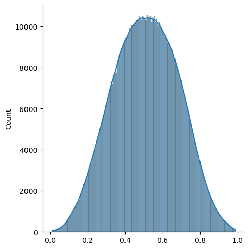
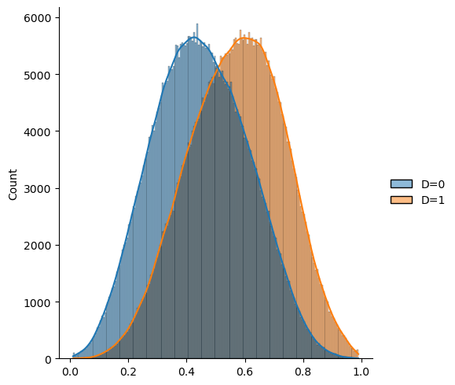
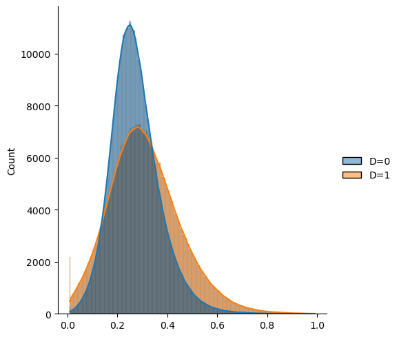
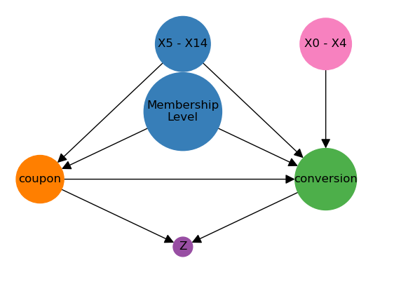

import numpy as np
import pandas as pd
import seaborn as sns
import scipy.stats as stats
import doubleml as dml
from sklearn.base import clone
from scipy.linalg import block_diag
np.random.seed(42)DGP
Packages
Hyperparameters
n = int(1e+6) # whole population size
m1 = 5 # number of features affecting only the outcome
m2 = 5 # number of confounders (no treatment heterogeneity)
m3 = 5 # number of confounders with treatment heterogeneity
a1 = 0.15 # baseline conversion probability
a2 = 0.02 # baseline conversion probability effect
p0 = 0.5 # baseline probability of treatment
m = m1 + m2 + m3Define Transformations
def transform(x, transformation_type=1):
if transformation_type == 1:
res = x
elif transformation_type == 2:
res = np.square(x)
elif transformation_type == 3:
res = np.power(x, 3)
elif transformation_type == 4:
res = np.sin(x)
elif transformation_type == 5:
res = np.cos(x)
elif transformation_type == 6:
res = np.exp(x)
elif transformation_type == 7:
res = np.maximum(x, 0)
elif transformation_type == 8:
res = np.log(np.abs(x), where=(np.abs(x)>np.exp(-5.0)), out=-5.0*np.ones_like(x))
elif transformation_type == 9:
res = np.sqrt(np.abs(x))
return res
def generalized_logit(x, alpha=1.0):
return np.power(1.0 + np.exp(-alpha* x), -1)# random_transformations
transformation_list = np.random.randint(1, 6, size=m)
transformation_list = 3*[1, 2, 3, 4, 5]
print(transformation_list)[1, 2, 3, 4, 5, 1, 2, 3, 4, 5, 1, 2, 3, 4, 5]Generate Covariates
Continuous Covariates
c = 0.5
covar1 = np.full((m1, m1), np.nan)
for i in range(m1):
for j in range(m1):
covar1[i, j] = np.power(c, int(np.abs(i-j)))
covar2 = np.full((m2, m2), np.nan)
for i in range(m2):
for j in range(m2):
covar2[i, j] = np.power(c, int(np.abs(i-j)))
covar3 = np.full((m3, m3), np.nan)
for i in range(m3):
for j in range(m3):
covar3[i, j] = np.power(c, int(np.abs(i-j)))
# covar = block_diag(covar1, covar2, covar3)
# X = np.random.normal(size=(n, m))
# X = np.random.uniform(low=-1.0, high=1.0, size=(n, m))
# X = stats.multivariate_normal(mean=np.zeros(m), cov=covar).rvs(size=n)covar = np.full((m, m), np.nan)
for i in range(m):
for j in range(m):
covar[i, j] = np.power(c, int(np.abs(i-j)))
X = np.random.multivariate_normal(mean=np.zeros(m), cov=covar, size=n)Z = np.full_like(X, np.nan)
for col_idx in range(m):
Z[:, col_idx] = transform(X[:, col_idx], transformation_list[col_idx])
Z = (Z - np.mean(Z, axis=0)) / Z.std(axis=0)Categorical Covariates
X_categorical = np.random.choice(["2", "1", "0"], size=(n, 1), p=[0.2, 0.4, 0.4])
df_dummies = pd.get_dummies(pd.DataFrame(X_categorical, columns=["membership_level"]))
X_dummies = df_dummies.values
categorical_feature_names = df_dummies.columns.to_list()df_dummies| membership_level_0 | membership_level_1 | membership_level_2 | |
|---|---|---|---|
| 0 | True | False | False |
| 1 | True | False | False |
| 2 | False | True | False |
| 3 | True | False | False |
| 4 | False | False | True |
| ... | ... | ... | ... |
| 999995 | False | True | False |
| 999996 | False | True | False |
| 999997 | False | True | False |
| 999998 | False | True | False |
| 999999 | True | False | False |
1000000 rows × 3 columns
Generate Treatment and Outcome
# coefficients
# continuous
coefs_scale_D = 6 / (m1 + m2)
beta_D2 = coefs_scale_D * np.random.uniform(0, 1, size=m2)
beta_D3 = coefs_scale_D * np.random.uniform(0, 1, size=m3)
coefs_scale_Y = 6 / (m1 + m2 + m3)
beta_Y1 = coefs_scale_Y * np.random.uniform(-1, 0, size=m1)
beta_Y2 = coefs_scale_Y * np.random.uniform(-1, 0, size=m2)
beta_Y3 = coefs_scale_Y * np.random.uniform(-1, 0, size=m3)
beta_Y3_D1 = coefs_scale_Y * np.random.uniform(-1, 0, size=m3)
# categorical
categorical_scale_D = 0.3
beta_D_categorical = categorical_scale_D * np.array([-0.5, 1.0, 0.4])
categorical_scale_Y = 0.3
beta_Y_categorical_D1 = categorical_scale_Y * np.array([1.0, -0.1, -0.3])
# error terms
scale = 0.3
epsilon_D = scale * np.random.uniform(-1, 1, size=n)
epsilon_Y = scale * np.random.uniform(-1, 1, size=n)
# define the features subsets for readability
Z1 = Z[:, :m1]
Z2 = Z[:, m1:m1+m2]
Z3 = Z[:, m1+m2:]
alpha = 0.6
logit_p0 = np.log(p0 / (1 - p0))
logit_a1 = np.log(a1 / (1 - a1))
logit_a2 = np.log((a1 + a2) / (1 - (a1 + a2)))logit_D = logit_p0 + Z2.dot(beta_D2) + Z3.dot(beta_D3) + X_dummies.dot(beta_D_categorical) + epsilon_D
prob_D = np.clip(generalized_logit(logit_D, alpha=alpha), 0.01, 0.99)
D = np.random.binomial(1, prob_D)
print(prob_D.mean())0.5107816090645191sns.displot(prob_D, kde=True)c:\Users\PuD\anaconda3\Lib\site-packages\seaborn\_oldcore.py:1498: FutureWarning: is_categorical_dtype is deprecated and will be removed in a future version. Use isinstance(dtype, CategoricalDtype) instead
if pd.api.types.is_categorical_dtype(vector):
c:\Users\PuD\anaconda3\Lib\site-packages\seaborn\_oldcore.py:1119: FutureWarning: use_inf_as_na option is deprecated and will be removed in a future version. Convert inf values to NaN before operating instead.
with pd.option_context('mode.use_inf_as_na', True):
n_min = np.minimum(len(prob_D[D==1]), len(prob_D[D==0]))
df_prob_D = pd.DataFrame(np.column_stack((prob_D[D==0][:n_min], prob_D[D==1][:n_min])), columns=['D=0', 'D=1'])
sns.displot(df_prob_D, kde=True)c:\Users\PuD\anaconda3\Lib\site-packages\seaborn\_oldcore.py:1498: FutureWarning: is_categorical_dtype is deprecated and will be removed in a future version. Use isinstance(dtype, CategoricalDtype) instead
if pd.api.types.is_categorical_dtype(vector):
c:\Users\PuD\anaconda3\Lib\site-packages\seaborn\_oldcore.py:1498: FutureWarning: is_categorical_dtype is deprecated and will be removed in a future version. Use isinstance(dtype, CategoricalDtype) instead
if pd.api.types.is_categorical_dtype(vector):
c:\Users\PuD\anaconda3\Lib\site-packages\seaborn\_oldcore.py:1498: FutureWarning: is_categorical_dtype is deprecated and will be removed in a future version. Use isinstance(dtype, CategoricalDtype) instead
if pd.api.types.is_categorical_dtype(vector):
c:\Users\PuD\anaconda3\Lib\site-packages\seaborn\_oldcore.py:1498: FutureWarning: is_categorical_dtype is deprecated and will be removed in a future version. Use isinstance(dtype, CategoricalDtype) instead
if pd.api.types.is_categorical_dtype(vector):
c:\Users\PuD\anaconda3\Lib\site-packages\seaborn\_oldcore.py:1498: FutureWarning: is_categorical_dtype is deprecated and will be removed in a future version. Use isinstance(dtype, CategoricalDtype) instead
if pd.api.types.is_categorical_dtype(vector):
c:\Users\PuD\anaconda3\Lib\site-packages\seaborn\_oldcore.py:1498: FutureWarning: is_categorical_dtype is deprecated and will be removed in a future version. Use isinstance(dtype, CategoricalDtype) instead
if pd.api.types.is_categorical_dtype(vector):
c:\Users\PuD\anaconda3\Lib\site-packages\seaborn\_oldcore.py:1119: FutureWarning: use_inf_as_na option is deprecated and will be removed in a future version. Convert inf values to NaN before operating instead.
with pd.option_context('mode.use_inf_as_na', True):
basemodel = Z1.dot(beta_Y1) + Z2.dot(beta_Y2) + Z3.dot(beta_Y3) + epsilon_Y
logit_Y_D0 = logit_a1 + basemodel
logit_Y_D1 = logit_a2 + basemodel + Z3.dot(beta_Y3_D1) + X_dummies.dot(beta_Y_categorical_D1)
prob_Y_D0 = np.clip(generalized_logit(logit_Y_D0, alpha=alpha), 0.01, 0.99)
prob_Y_D1 = np.clip(generalized_logit(logit_Y_D1, alpha=alpha), 0.01, 0.99)
prob_Y = prob_Y_D0 * (1 - D) + prob_Y_D1 * D
Y = np.random.binomial(1, prob_Y)df_prob_Y = pd.DataFrame(np.column_stack((prob_Y_D0, prob_Y_D1)), columns=['D=0', 'D=1'])
sns.displot(df_prob_Y, kde=True)c:\Users\PuD\anaconda3\Lib\site-packages\seaborn\_oldcore.py:1498: FutureWarning: is_categorical_dtype is deprecated and will be removed in a future version. Use isinstance(dtype, CategoricalDtype) instead
if pd.api.types.is_categorical_dtype(vector):
c:\Users\PuD\anaconda3\Lib\site-packages\seaborn\_oldcore.py:1498: FutureWarning: is_categorical_dtype is deprecated and will be removed in a future version. Use isinstance(dtype, CategoricalDtype) instead
if pd.api.types.is_categorical_dtype(vector):
c:\Users\PuD\anaconda3\Lib\site-packages\seaborn\_oldcore.py:1498: FutureWarning: is_categorical_dtype is deprecated and will be removed in a future version. Use isinstance(dtype, CategoricalDtype) instead
if pd.api.types.is_categorical_dtype(vector):
c:\Users\PuD\anaconda3\Lib\site-packages\seaborn\_oldcore.py:1498: FutureWarning: is_categorical_dtype is deprecated and will be removed in a future version. Use isinstance(dtype, CategoricalDtype) instead
if pd.api.types.is_categorical_dtype(vector):
c:\Users\PuD\anaconda3\Lib\site-packages\seaborn\_oldcore.py:1498: FutureWarning: is_categorical_dtype is deprecated and will be removed in a future version. Use isinstance(dtype, CategoricalDtype) instead
if pd.api.types.is_categorical_dtype(vector):
c:\Users\PuD\anaconda3\Lib\site-packages\seaborn\_oldcore.py:1498: FutureWarning: is_categorical_dtype is deprecated and will be removed in a future version. Use isinstance(dtype, CategoricalDtype) instead
if pd.api.types.is_categorical_dtype(vector):
c:\Users\PuD\anaconda3\Lib\site-packages\seaborn\_oldcore.py:1119: FutureWarning: use_inf_as_na option is deprecated and will be removed in a future version. Convert inf values to NaN before operating instead.
with pd.option_context('mode.use_inf_as_na', True):
print(prob_Y.mean())
print(prob_Y_D0.mean())
print(prob_Y_D1.mean())0.2866073093784663
0.27285094552126216
0.31147764782787124ind_treat_effect = prob_Y_D1 - prob_Y_D0
print(ind_treat_effect.mean())0.0386267023066091ind_treat_effect_treated = prob_Y_D1[D==1] - prob_Y_D0[D==1]
print(ind_treat_effect_treated.mean())0.026911998092976515Bad Controls
small_noise = np.random.normal(scale=0.01, size=n)
bad_control = prob_Y + prob_D + small_noise
X_bad_control = (bad_control - bad_control.mean()) / bad_control.std()
# Binary collider
#X_bad_control = np.where(X_bad_control > 0, 1, 0)DataFrame
data = np.column_stack((Y, D, X, X_dummies, X_bad_control, ind_treat_effect))outcome_name = 'conversion'
treatment_name = 'coupon'
outcome_features = ['X' + str(i) for i in range(m1)]
confounding_features = ['X' + str(i) for i in range(m1, m)] + categorical_feature_names
bad_control_name = 'Z'
ind_treat_effect_name = 'ite'
column_names = [outcome_name, treatment_name] + outcome_features + confounding_features + [bad_control_name, ind_treat_effect_name]
df_large = pd.DataFrame(data=data, columns=column_names)
df_large.head()| conversion | coupon | X0 | X1 | X2 | X3 | X4 | X5 | X6 | X7 | ... | X10 | X11 | X12 | X13 | X14 | membership_level_0 | membership_level_1 | membership_level_2 | Z | ite | |
|---|---|---|---|---|---|---|---|---|---|---|---|---|---|---|---|---|---|---|---|---|---|
| 0 | 0.0 | 1.0 | -0.911770 | -0.310388 | -0.354730 | 0.397070 | -1.130727 | 0.651680 | -0.316580 | -0.498481 | ... | 0.187715 | 0.044442 | -0.571563 | 0.684072 | -0.505219 | 1.0 | 0.0 | 0.0 | 1.759539 | 0.063839 |
| 1 | 0.0 | 0.0 | 2.107779 | 1.350942 | 0.513782 | 0.415400 | 1.116268 | 1.001325 | 0.212269 | 0.998455 | ... | -0.230834 | -0.572155 | 0.491627 | -0.310874 | 0.253668 | 1.0 | 0.0 | 0.0 | 0.309403 | 0.074881 |
| 2 | 0.0 | 1.0 | 0.696159 | -0.384986 | 0.465520 | 1.461894 | 2.061735 | 1.313400 | 2.300369 | 0.042248 | ... | -0.699297 | 0.512477 | 1.116559 | 0.376294 | 0.788950 | 0.0 | 1.0 | 0.0 | 1.182307 | 0.048326 |
| 3 | 1.0 | 1.0 | 0.707464 | 0.120454 | 1.800731 | 0.261856 | 0.912950 | 1.660922 | 0.329088 | 0.048371 | ... | -0.783599 | 0.424781 | 0.449760 | 0.550644 | -0.256659 | 1.0 | 0.0 | 0.0 | -0.216121 | 0.076954 |
| 4 | 0.0 | 1.0 | 1.008733 | 0.259872 | 0.451844 | 0.277476 | 2.572872 | 1.743137 | 2.218926 | 1.606350 | ... | 0.925427 | -0.808282 | -0.567515 | 0.841674 | -0.045244 | 0.0 | 0.0 | 1.0 | 2.020910 | -0.031030 |
5 rows × 22 columns
Causal Analysis
# ATE
treatment_probabiltiy = df_large[treatment_name].mean()
print(treatment_probabiltiy)
ATE = df_large[ind_treat_effect_name].mean()
print(ATE)0.511161
0.0386267023066091df_large[['coupon','conversion']].groupby('coupon').mean().diff()| conversion | |
|---|---|
| coupon | |
| 0.0 | NaN |
| 1.0 | -0.00871 |
Get sample to calculate the ATE
subsample_size = 10000
df = df_large.sample(n=subsample_size, random_state=42)
print(df[ind_treat_effect_name].mean())
print(df[df[treatment_name]==1][ind_treat_effect_name].mean())0.03908395919621666
0.02730992927370012Create DAG
import matplotlib.pyplot as plt
import networkx as nx
plt.rcParams['figure.figsize'] = 7., 5
G = nx.DiGraph()outcome_name = 'conversion'
treatment_name = 'coupon'
cont_confounding_features = f"X{m1} - X{m-1}"
cat_confounding_features = "Membership\nLevel"
outcome_features = f"X0 - X{m1-1}"
bad_control_name = 'Z'
G.add_node(treatment_name)
G.add_node(outcome_name)
G.add_node(cont_confounding_features)
G.add_node(cat_confounding_features)
G.add_node(outcome_features)
G.add_node(bad_control_name)
G.add_edge(treatment_name, outcome_name)
G.add_edge(cont_confounding_features, treatment_name)
G.add_edge(cat_confounding_features, treatment_name)
G.add_edge(outcome_features, outcome_name)
G.add_edge(cont_confounding_features, outcome_name)
G.add_edge(cat_confounding_features, outcome_name)
G.add_edge(treatment_name, bad_control_name)
G.add_edge(outcome_name, bad_control_name)
pos = {treatment_name: (0, 0),
outcome_name: (1.5, 0),
cont_confounding_features: (0.75, 2),
cat_confounding_features: (0.75, 1),
outcome_features: (1.5, 2),
bad_control_name: (0.75, -1)}
the_base_size = 400
colors = {
'blue': '#377eb8',
'orange': '#ff7f00',
'green': '#4daf4a',
'pink': '#f781bf',
'brown': '#a65628',
'purple': '#984ea3',
'gray': '#999999',
'red': '#e41a1c',
'yellow': '#dede00'
}
size = [len(v) * the_base_size for v in G.nodes()]
color_map = [colors['orange'], colors['green'], colors['blue'],
colors['blue'], colors['pink'], colors['purple']]
nx.draw_networkx(G, pos, with_labels=True,
node_size=size,
node_color=color_map,
arrowsize=20,)
plt.axis('off')
axis = plt.gca()
axis.set_xlim([1.1*x for x in axis.get_xlim()])
axis.set_ylim([1.1*y for y in axis.get_ylim()])
plt.show()
# Override names again
outcome_name = 'conversion'
treatment_name = 'coupon'
outcome_features = ['X' + str(i) for i in range(m1)]
confounding_features = ['X' + str(i) for i in range(m1, m)] + categorical_feature_names
bad_control_name = 'Z'
ind_treat_effect_name = 'ite'Save Data
path = "../data/"
# df_large.to_csv(path + "uplift_data_population.csv", index=False)
df.to_csv(path + "uplift_data.csv", index=False)# Random subsample only (faster computations)
df_subsample = df_large.sample(n = 10000)
df_subsample.to_csv(path + "uplift_data_subsample.csv", index = False)
# Save (quasi-)separate data for policy eval
df_subsample.to_csv(path + "uplift_data_policy.csv", index = False)Simple comparison and T-Test
Compare to differences in means between treatment and control groups.
df[['coupon','conversion']].groupby('coupon').mean()df[['coupon','conversion']].groupby('coupon').mean().diff()
simple_means = df[['coupon','conversion']].groupby('coupon').mean().diff().values[1,0]
print(simple_means)T-Test
treated_sample = df[df['coupon'] == 1]
control_sample = df[df['coupon'] == 0]t_test = stats.ttest_ind(treated_sample.loc[:,["conversion"]], control_sample.loc[:,["conversion"]], equal_var=False)
print(t_test)Learners
from sklearn.linear_model import LogisticRegression
from sklearn.ensemble import RandomForestClassifier
from lightgbm import LGBMClassifier
ml_g_linear = LogisticRegression(penalty=None, solver='lbfgs', max_iter=1000)
ml_m_linear = LogisticRegression(penalty=None, solver='lbfgs', max_iter=1000)
ml_g_rf = RandomForestClassifier(n_estimators=200, max_depth=10, min_samples_leaf=20, max_features=5)
ml_m_rf = RandomForestClassifier(n_estimators=200, max_depth=10, min_samples_leaf=20, max_features=5)
ml_g_boost = LGBMClassifier(n_estimators=1000, learning_rate=0.005)
ml_m_boost = LGBMClassifier(n_estimators=1000, learning_rate=0.005)Basic DoubleML (only confounders)
dml_data_conf = dml.DoubleMLData(df, outcome_name, treatment_name, x_cols=confounding_features)dml_obj_conf_linear = dml.DoubleMLIRM(dml_data_conf, clone(ml_g_linear), clone(ml_m_linear),
n_folds=5,
n_rep=1,
trimming_threshold=0.05,)
dml_obj_conf_linear.fit()dml_obj_conf_rf = dml.DoubleMLIRM(dml_data_conf, clone(ml_g_rf), clone(ml_m_rf),
n_folds=5,
n_rep=1,
trimming_threshold=0.05,)
dml_obj_conf_rf.fit()dml_obj_conf_boost = dml.DoubleMLIRM(dml_data_conf, clone(ml_g_boost), clone(ml_m_boost),
n_folds=5,
n_rep=1,
trimming_threshold=0.05,)
dml_obj_conf_boost.fit()print(dml_obj_conf_linear.summary)
print(dml_obj_conf_rf.summary)
print(dml_obj_conf_boost.summary)DoubleML (further controls)
dml_data = dml.DoubleMLData(df, outcome_name, treatment_name, x_cols=outcome_features + confounding_features)dml_obj_linear = dml.DoubleMLIRM(dml_data, clone(ml_g_linear), clone(ml_m_linear),
n_folds=5,
n_rep=1,
trimming_threshold=0.05,)
dml_obj_linear.fit()dml_obj_rf = dml.DoubleMLIRM(dml_data, clone(ml_g_rf), clone(ml_m_rf),
n_folds=5,
n_rep=1,
trimming_threshold=0.05,)
dml_obj_rf.fit()dml_obj_boost = dml.DoubleMLIRM(dml_data, clone(ml_g_boost), clone(ml_m_boost),
n_folds=5,
n_rep=1,
trimming_threshold=0.05,)
dml_obj_boost.fit()print(dml_obj_linear.summary)
print(dml_obj_rf.summary)
print(dml_obj_boost.summary)Bad Controls
dml_data_bad_controls = dml.DoubleMLData(df, outcome_name, treatment_name, x_cols=outcome_features + confounding_features + [bad_control_name])dml_obj_linear_bad_controls = dml.DoubleMLIRM(dml_data_bad_controls, clone(ml_g_linear), clone(ml_m_linear),
n_folds=5,
n_rep=1)
dml_obj_linear_bad_controls.fit()dml_obj_rf_bad_controls = dml.DoubleMLIRM(dml_data_bad_controls, ml_g_rf, ml_m_rf,
n_folds=5,
n_rep=1)
dml_obj_rf_bad_controls.fit()dml_obj_boost_bad_controls = dml.DoubleMLIRM(dml_data_bad_controls, ml_g_boost, ml_m_boost,
n_folds=5,
n_rep=1)
dml_obj_boost_bad_controls.fit()print(dml_obj_linear_bad_controls.summary)
print(dml_obj_rf_bad_controls.summary)
print(dml_obj_boost_bad_controls.summary)Compare all:
print("=========== True Values ===========")
print("ATE in Population: ", ATE)
print("ATE in Sample: ", df[ind_treat_effect_name].mean(), "\n")
print("=========== Simple Means and T-Test ===========")
print(f"Estimate: {simple_means:.4f}, p-value: {t_test[1][0]:.4f}", "\n")
print("=========== ATE with only confounding controls ===========")
print(dml_obj_conf_linear.summary)
print(dml_obj_conf_rf.summary)
print(dml_obj_conf_boost.summary, "\n")
print("=========== ATE with all controls ===========")
print(dml_obj_linear.summary)
print(dml_obj_rf.summary)
print(dml_obj_boost.summary, "\n")
print("=========== ATE with bad controls ===========")
print(dml_obj_linear_bad_controls.summary)
print(dml_obj_rf_bad_controls.summary)
print(dml_obj_boost_bad_controls.summary)Tune Learner
par_grids_boost = {'ml_g': {'learning_rate': np.arange(0.05, 0.5, 0.05)},
'ml_m': {'learning_rate': np.arange(0.05, 0.5, 0.05)}}
dml_obj_boost_tune = dml.DoubleMLIRM(dml_data, clone(ml_g_boost), clone(ml_m_boost),
n_folds=5,
n_rep=1,
trimming_threshold=0.05)
# Comment out to avoid execution
# dml_obj_boost_tune.tune(param_grids=par_grids_boost)
print(dml_obj_boost_tune.params)
# dml_obj_boost_tune.fit()
print(dml_obj_boost_tune.summary)Group Effects
Consider average effect for the groups of the categorical variable.
for name in categorical_feature_names:
print(f"{name}: {df_large['ite'][df_dummies[name] == 1].mean()}")gate_rf = dml_obj_rf.gate(df[categorical_feature_names] == 1)
print(gate_rf)gate_boost = dml_obj_boost.gate(df[categorical_feature_names] == 1)
print(gate_boost)CATE
Consider variable \(X8\) and \(X14\).
import statsmodels.api as sm
import patsy
from matplotlib import pyplot as plt
plt.rcParams['figure.figsize'] = 15., 7.5
def plot_cate(axis, df_cate, var_name, true_values=None):
df_cate[var_name] = new_data[var_name]
axis.plot(df_cate[var_name], df_cate['effect'], label='Estimated Effect')
axis.fill_between(df_cate[var_name], df_cate['2.5 %'], df_cate['97.5 %'], color='b', alpha=.3, label='Confidence Interval')
if true_values is not None:
axis.plot(df_cate[var_name], true_values, color="green", label='True Effect')
returndegree = 3
degrees_of_freedom = 6
lower_quantile = 0.2
upper_quantile = 0.8var_name = "X5"True CATE:
design_matrix_population = patsy.dmatrix(f"bs({var_name}, df={degrees_of_freedom}, degree={degree})", {var_name:df_large[var_name]})
spline_basis_population = pd.DataFrame(design_matrix_population)
cate_population = sm.OLS(df_large['ite'], spline_basis_population).fit()
var_range_population = np.quantile(df_large[var_name], [lower_quantile, upper_quantile])
new_data_population = {var_name: np.linspace(var_range_population[0], var_range_population[1], 100)}
spline_grid_population = pd.DataFrame(patsy.build_design_matrices([design_matrix_population.design_info], new_data_population)[0])
true_values = cate_population.predict(spline_grid_population)
design_matrix = patsy.dmatrix(f"bs({var_name}, df={degrees_of_freedom}, degree={degree})", {var_name:df[var_name]})
spline_basis = pd.DataFrame(design_matrix)cate_rf = dml_obj_rf.cate(spline_basis)
cate_boost = dml_obj_boost.cate(spline_basis)var_range = np.quantile(df[var_name], [lower_quantile, upper_quantile])
new_data = {var_name: np.linspace(var_range[0], var_range[1], 100)}
spline_grid = pd.DataFrame(patsy.build_design_matrices([design_matrix.design_info], new_data)[0])df_cate_rf = cate_rf.confint(spline_grid, level=0.95, joint=False, n_rep_boot=2000)
df_cate_boost = cate_boost.confint(spline_grid, level=0.95, joint=False, n_rep_boot=2000)fig, axis = plt.subplots(1,2)
plot_cate(axis[0], df_cate_rf, var_name, true_values=true_values)
plot_cate(axis[1], df_cate_boost, var_name, true_values=true_values)
plt.legend()
plt.title('CATE')
plt.xlabel(var_name)
plt.ylabel('Effect and 95%-CI')
plt.show()var_name = "X13"design_matrix_population = patsy.dmatrix(f"bs({var_name}, df={degrees_of_freedom}, degree={degree})", {var_name:df_large[var_name]})
spline_basis_population = pd.DataFrame(design_matrix_population)
cate_population = sm.OLS(df_large['ite'], spline_basis_population).fit()
var_range_population = np.quantile(df_large[var_name], [lower_quantile, upper_quantile])
new_data_population = {var_name: np.linspace(var_range_population[0], var_range_population[1], 100)}
spline_grid_population = pd.DataFrame(patsy.build_design_matrices([design_matrix_population.design_info], new_data_population)[0])
true_values = cate_population.predict(spline_grid_population)design_matrix = patsy.dmatrix(f"bs({var_name}, df={degrees_of_freedom}, degree={degree})", {var_name:df[var_name]})
spline_basis = pd.DataFrame(design_matrix)cate_rf = dml_obj_rf.cate(spline_basis)
cate_boost = dml_obj_boost.cate(spline_basis)var_range = np.quantile(df[var_name], [lower_quantile, upper_quantile])
new_data = {var_name: np.linspace(var_range[0], var_range[1], 100)}
spline_grid = pd.DataFrame(patsy.build_design_matrices([design_matrix.design_info], new_data)[0])df_cate_rf = cate_rf.confint(spline_grid, level=0.95, joint=False, n_rep_boot=2000)
df_cate_boost = cate_boost.confint(spline_grid, level=0.95, joint=False, n_rep_boot=2000)fig, axis = plt.subplots(1,2)
plot_cate(axis[0], df_cate_rf, var_name, true_values=true_values)
plot_cate(axis[1], df_cate_boost, var_name, true_values=true_values)
plt.legend()
plt.title('CATE')
plt.xlabel(var_name)
plt.ylabel('Effect and 95%-CI')
plt.show()## Policy Tree
# TODO: evaluate on separate data set (generate hold-out sample and evaluate on that)